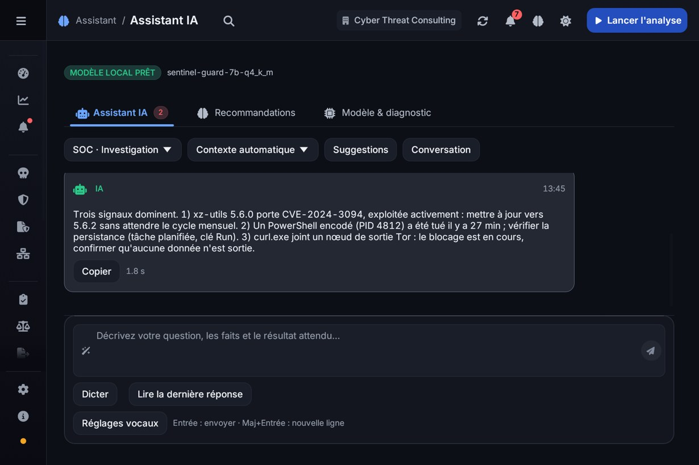
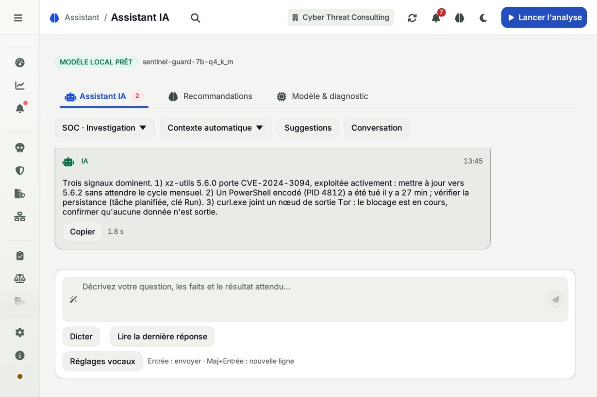
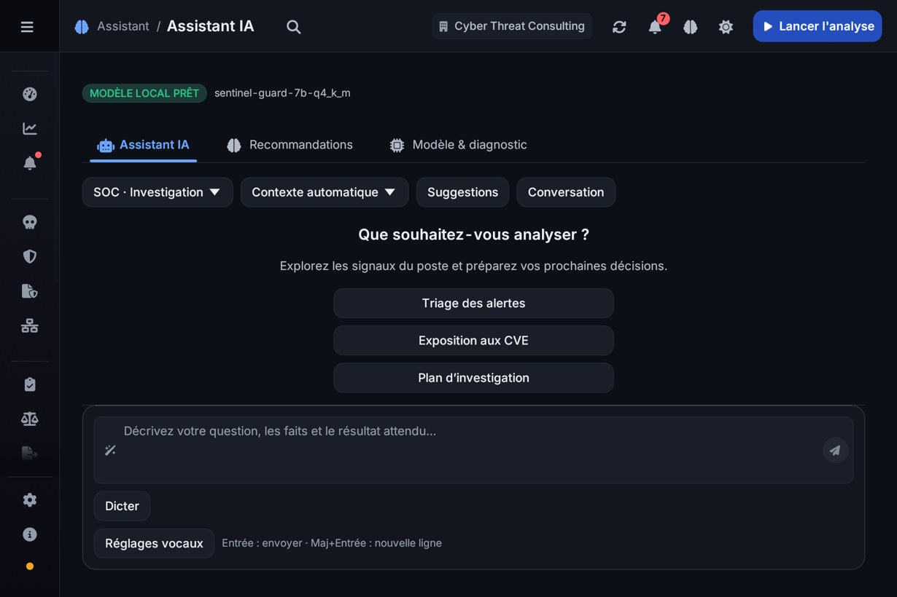
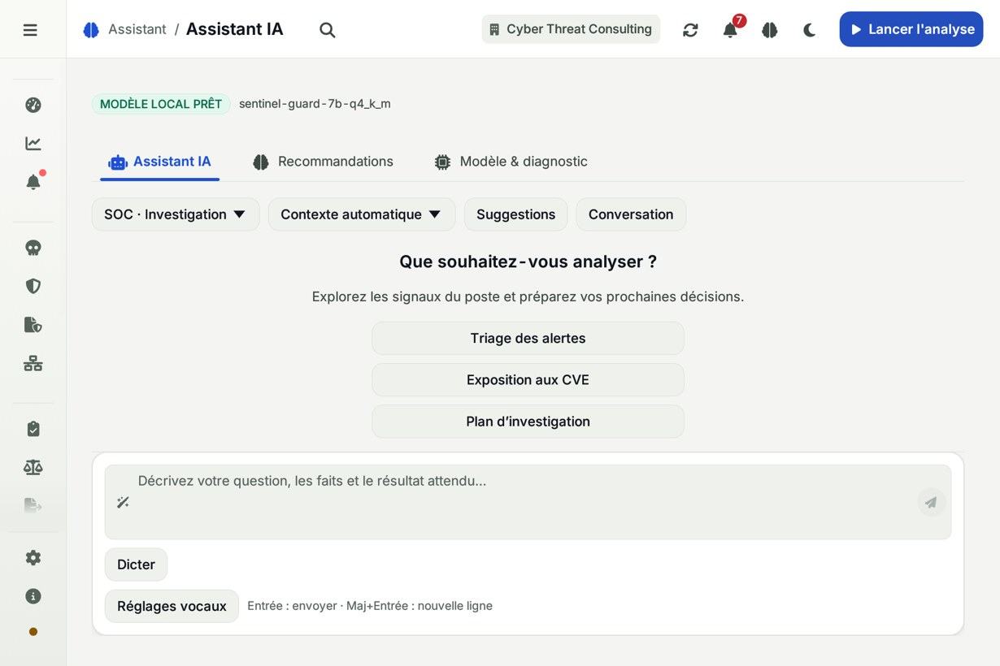
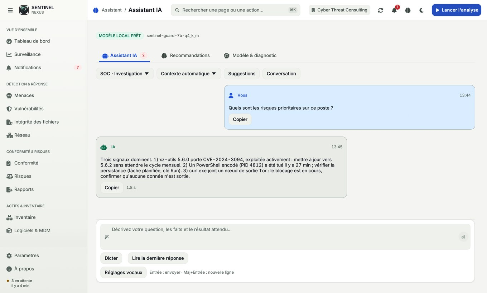
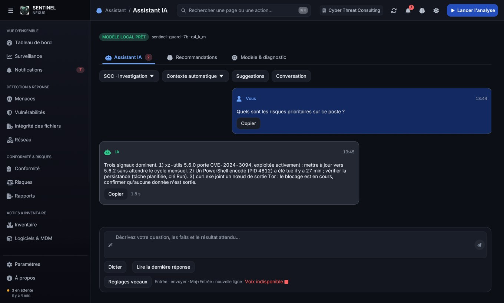
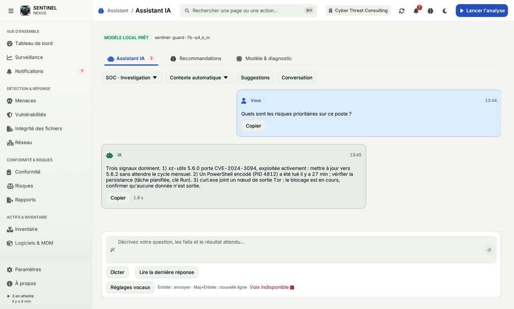
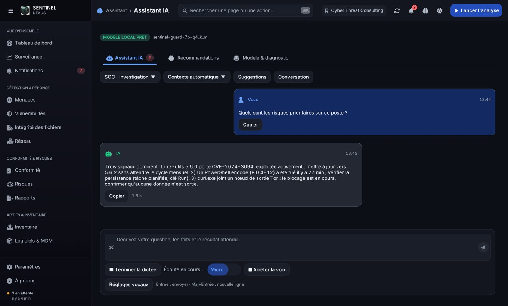
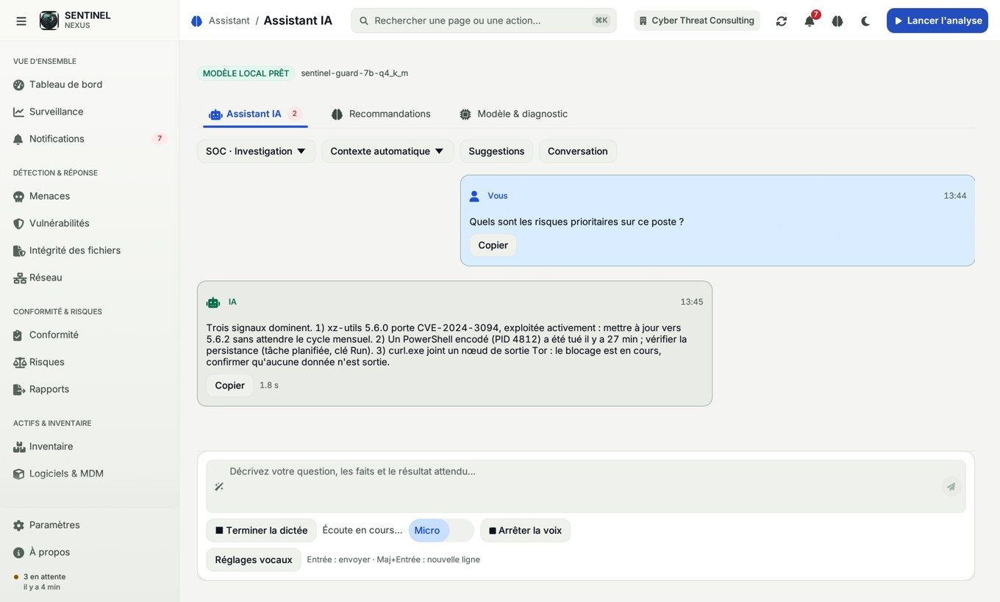

Assistant IA — composition révisée
Conversation centrale, saisie ancrée en bas, barre d’outils regroupée et réglages vocaux dans un menu. Rendus natifs à 1360 × 820 et 960 × 640, thèmes clair et sombre.
Données de démonstration : les réponses et états vocaux sont simulés. Ces captures vérifient l’interface, pas les résultats du moteur ni la capture audio réelle.
compact-conversation-dark
compact-conversation-light
compact-dark
compact-light
conversation-darkconversation-light
erreur-dark
erreur-light
vocal-dark
vocal-light